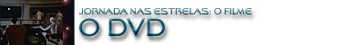

|

STAR TREK:
THE MOTION PICTURE
1979


Sinopse
comentada
Comentrios
Citaes
Os novos
efeitos
Trivia
Ficha
Tcnica
O
DVD
A Aventura Humana est
apenas
comeando...

Imagem
"O Filme" apresentado em widescreen anamrfico na
proporo original de 2,35/1. Para quem sempre assistiu verso
"mutilada" em tela cheia, essa edio ser uma verdadeira
revelao, pois o filme e seus fantsticos efeitos especiais podem
agora ser apreciados em toda a sua glria.
A imagem muito boa, mas faltou um tratamento de recuperao da pelcula
original. A imagem est muito envelhecida, tem muita granulao e as
cenas escuras perdem definio.
Em compensao a resoluo da imagem est excelente e as cores esto
fantsticas. Mesmo com alguns defeitos, a melhor edio lanada do
filme no quesito imagem. As edies anteriores em VHS e laserdisc tinham
uma pssima imagem, pois foram originadas de um master de baixa
qualidade.
Som
Para essa edio especial de "Jornada nas Estrelas: O
Filme", a trilha sonora do filme foi totalmente restaurada,
remixada e aperfeioada para os padres modernos de som. O resultado
incrvel.
O som fantstico. J no incio do filme vemos nossa sala bombardeada
pela magnfica trilha sonora de Jerry Goldsmith. O som em ingls Dolby
Digital 5.1 cria um timo ambiente sonoro, com excelente distribuio
entre as caixas frontais e traseiras.
Tambm est disponvel a opo de udio em Dolby Surround para quem
no tem um sistema de som Dolby Digital.
No h dublagem em outros idiomas, pois se trata de uma nova edio do
filme, com cenas novas e seria difcil sincronizar o udio com dublagens
pr-existentes. O filme teria que ser dublado de novo em outras lnguas
e isso custa caro.
Extras:
Sendo a primeira edio especial de um filme de Jornada nas Estrelas,
a Paramount tinha que caprichar; e caprichou mesmo, mais do que o
esperado. Temos:
Um excelente
menu interativo, no disco 1, que simula a tela da ponte da Enterprise. No
disco 2 o menu melhor ainda, onde as opes so acessadas em um
V'Ger recriado por computador.
Comentrios do
diretor Robert Wise, do compositor Jerry Goldsmith e da equipe tcina do
filme, que substituem a trilha sonora. Traz informaes preciosas do
filme e da nova Edio do Diretor.
Texto de Michael
Okuda, que funciona semelhana de uma legenda comum, trazendo informaes
tcnicas sobre o design do filme.
Documentrio
sobre o projeto Fase II, que foi abortado. Traz entrevistas e fotos
raras.
Documentrio do
filme original, que traz entrevistas com parte do elenco e produo.
Imperdvel tambm.
Documentrio
sobre os novos efeitos especiais. Muito interessante. Mostra comparaes
entre os efeitos e o porque de se fazer tais alteraes.
Trailers
originais e comerciais de TV. No vistos desde a estria do filme em
1979.
Cinco cenas do
filme original que foram alteradas na nova edio. Aqui elas so
mostradas de forma integral.
Onze cenas
deletadas que fizeram parte de uma verso televisionada nos EUA em 1983.
A cena mais interessante a de Kirk, com roupa espacial, deixando a
Enterprise para buscar Spock. Note-se que nessa cena a Enterprise aparece
inacabada, no meio de um estdio de gravao, e mesmo assim a cena foi
parar na televiso. Na poca ningum percebeu (?!).
Trs sequncias
de storyboards originais de algumas cenas do filme. So interessantes,
pois foram usadas como base para os novos efeitos especiais.
Uma breve
apresentao da srie Enterprise.
Ficha Tcnica
Extras: Menu interativo, Seleo de Cena, comentrios do diretor
e equipe tcnica, texto de Michael Okuda, 3 documentrios, trailers,
comerciais de televiso, 5 cenas deletadas da verso original de 1979,
11 cenas deletadas da verso para televiso de 1983, storyboards e uma
breve apresentao da srie Enterprise
Vdeo: Widescreen anamrfico (2,35:1)
udio: Ingls (Dolby Digital 5.1 Surround), Ingls (Dolby 2.0
Surround)
Legendas: Ingls, Portugus, Espanhol
Ano de produo: 1979
Durao: 136 minutos
Ano de Lanamento no Brasil (Regio 4): 2002